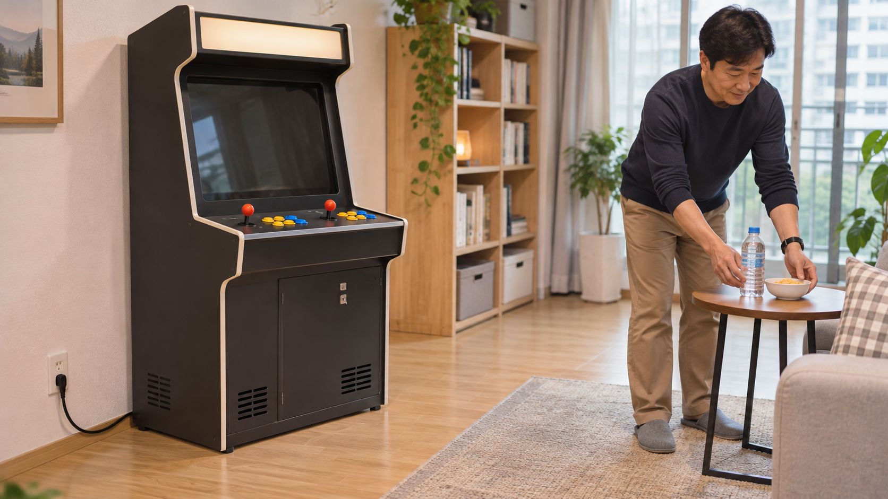
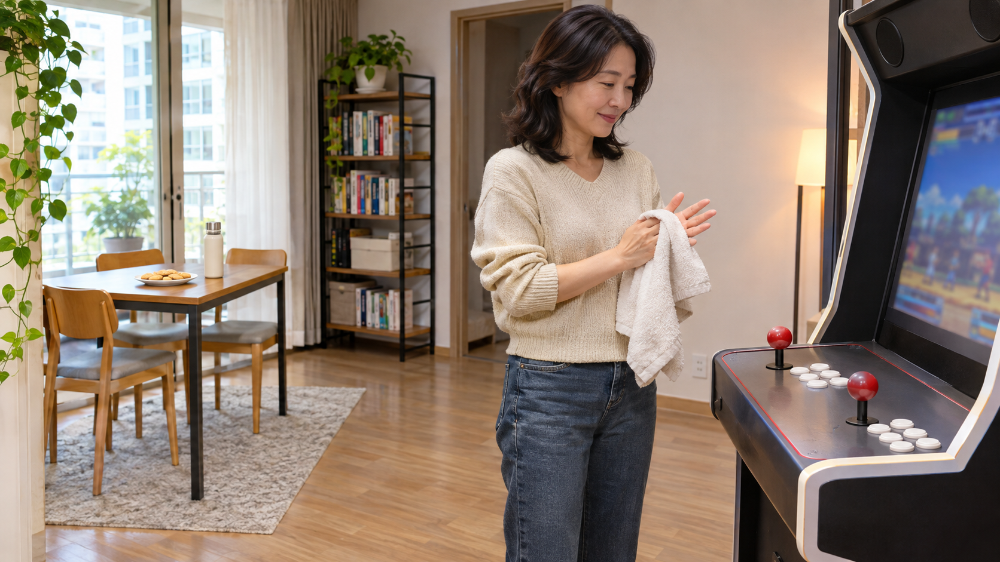

음료와 간식은 오락기 본체나 조작부 위에 두지 말고, 기기와 케이블에서 떨어진 안정적인 별도 테이블에 두세요. 먹는 자리와 조작 자리를 나누고, 다시 게임을 시작하기 전 손과 조작부에 물기나 부스러기가 없는지 확인하는 기준을 가족과 함께 정하면 좋습니다. 뚜껑이 있는 용기라도 오락기 위나 케이블 옆에 두지 마세요.

음료는 본체와 조작부에서 떨어진 별도 테이블에 두세요
음료는 조작 중 손이 닿는 본체 위, 조작부 옆, 의자 팔걸이 대신 평평하고 흔들리지 않는 별도 테이블에 두세요. 테이블은 사람이 지나가거나 의자를 빼는 경로를 막지 않고, 전원선과 화면선을 가로지르지 않는 위치여야 합니다. 병이나 컵에 뚜껑이 있어도 넘어질 수 있으므로 기기와 같은 선반이나 수납장에는 함께 두지 마세요.
음료는 본체·조작부·전원선에 닿지 않는 별도 테이블 위에 두고 이동 경로와도 분리해야 합니다.
조작부 앞의 이동 범위를 확인하는 방법은 오락기 조작부 앞 공간 확인 방법을 참고하세요. 별도 테이블을 놓은 뒤에도 문과 의자, 사람의 이동이 겹치지 않는지 실제 동작으로 다시 확인해야 합니다.

간식은 손을 닦고 먹을 수 있는 자리로 나누세요
간식은 조작 자리에서 먹기보다 별도 테이블로 이동해 먹고, 빈 그릇과 포장지는 그 자리에서 정리하세요. 다시 조작하기 전에는 손에 기름기나 부스러기, 물기가 남지 않았는지 확인하고 필요한 경우 손을 씻은 뒤 충분히 말리세요. 조작부에 부스러기가 보이면 제품을 사용하는 상태에서 틈 안으로 밀어 넣지 말고, 제품 안내에 맞는 청소 방법을 확인하세요.
간식 자리는 조작 자리와 나누고 다시 게임하기 전 손과 조작부에 부스러기가 없는지 확인하세요.
- 음료와 간식은 안정적인 별도 테이블에 두기
- 먹는 동안에는 조작부를 만지지 않기
- 게임으로 돌아오기 전 손의 물기와 부스러기 확인하기
- 빈 용기와 포장지는 별도 자리에서 바로 정리하기
제품 형태와 가족 동선을 함께 확인하세요
노리박스 공개 제품 목록에는 20+ 테이블형, 24+ 좌식형, 27+와 32+ 계열 스탠드형, TV 연결형 분리기통이 각각 안내되어 있습니다. 테이블형처럼 상판이 가까워 보여도 음식물을 올려도 된다는 뜻은 아니며, 좌식형과 스탠드형은 의자를 빼거나 서서 이동하는 경로가 다릅니다. 실제 제품 형태와 자주 함께 사용하는 가족의 동선을 기준으로 음료 테이블 위치를 정하세요.
테이블형·좌식형·스탠드형은 손이 닿는 높이와 이동 경로가 달라 실제 배치에서 확인해야 합니다.
오락기 옆 수납공간은 케이블과 구성품 전용으로 두고 음식물과 섞지 마세요. 구성품을 따로 정리하는 기준은 오락기 옆 구성품 수납공간 마련 방법에서 확인할 수 있습니다.
쏟았을 때 먼저 멈추고 상태를 기록하세요
음료가 본체나 조작부, 케이블 가까이에 쏟아졌다면 즉시 게임을 멈추고 사람이 젖은 구역에 접근하지 않게 하세요. 전원 상태를 임의로 바꾸거나 기기를 분해하지 말고, 정확한 제품명과 액체가 닿은 위치를 사진으로 기록해 제품 안내와 판매자 지시를 확인하세요. 전원 관련 조치가 불분명하면 젖은 부분이나 플러그를 직접 만지지 말고 문의부터 진행하세요.
액체가 닿았다면 사용을 멈추고 전원 상태를 임의로 바꾸지 않은 채 제품명과 닿은 위치를 기록해 문의하세요.
현재 노리박스 오락실게임기의 형태와 설치 방식을 비교하려면 제품자세히보기에서 확인하세요.